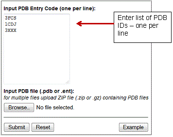
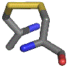
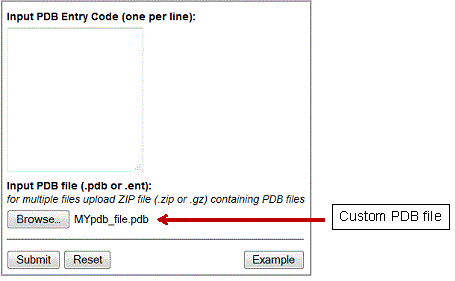
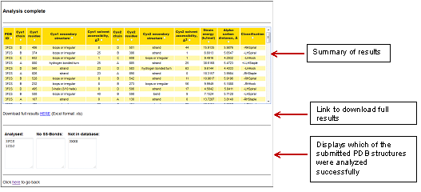
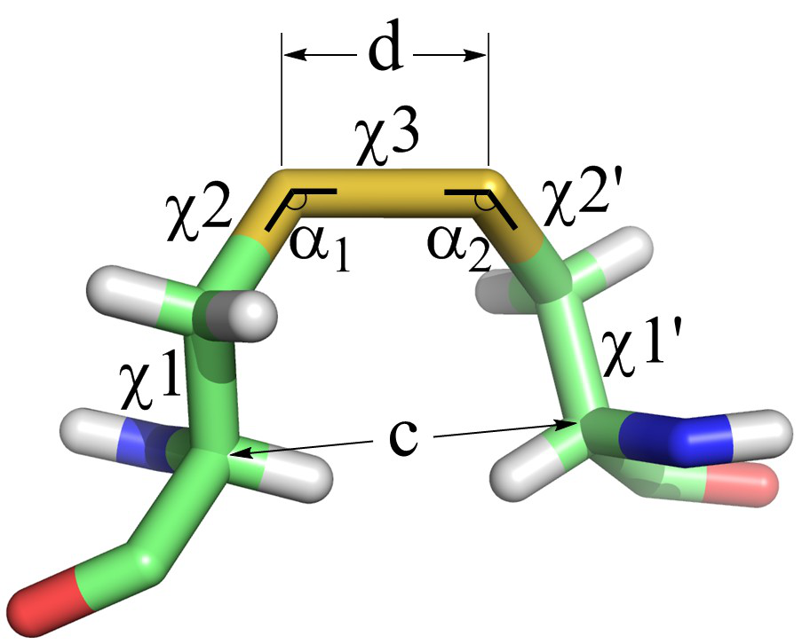
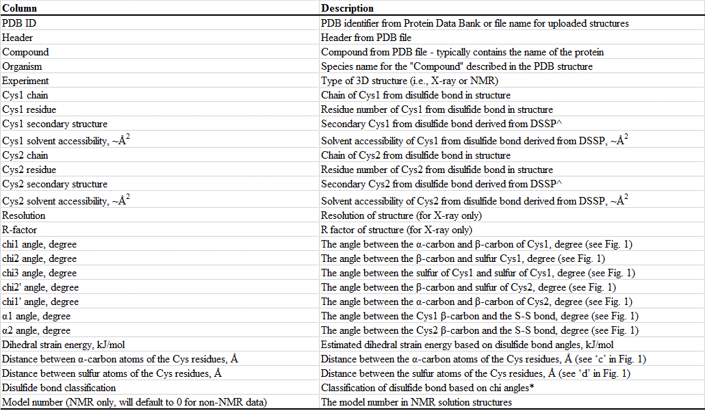
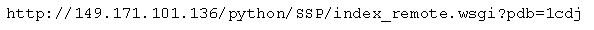

| Disulfide Bond Analysis - Documentation |
| 1. Data input |
PDB ID - for structures already present in the Protein Data Bank.


Contact
Prof. Philip Hogg
T +61 (2) 8627 4716
E phil.hogg@sydney.edu.au
|
| File upload – for custom 3D structures

Click ‘Submit’ to begin analysis.
Note that both PDB IDs and files can be submitted simultaneously for analysis.
|
| 2. Output |

Summary of results
A table lists the most significant information about all disulfide bonds present in all of the structures submitted. See the next section for a full description of all column entries. Entries in the table can be sorted using any column for rapid visualisation of results.
Full results

Figure 1. Angles and distances of the cystine residue.
An example of full results can be downloaded here.
The full results can be downloaded in Microsoft Excel format. Below is a table describing each of the columns in the output:

^ For a detailed description of the definition of secondary structures from DSSP – see http://swift.cmbi.kun.nl/gv/dssp/DSSP_2.html
* For a further details regarding the disulfide bond classification – see
- Schmidt B, Ho L, Hogg PJ: Allosteric disulfide bonds. Biochemistry 2006, 45(24):7429-7433.
- Schmidt B, Hogg PJ: Search for allosteric disulfide bonds in NMR structures. BMC Struct Biol 2007, 7:49.
Summary of files analysed
At the bottom of the results page, all input PDB IDs that have been successfully analysed are listed. All inputs without disulfide bonds or are not present in the Protein Data Bank are also shown.
|
| 3. API access |
This web service also provides a remote API for accessing the analysis software. An example of how to do this is below:

where the PDB ID 1cdj may be replaced with any PDB ID in the RCSB Protein Data Bank.
|